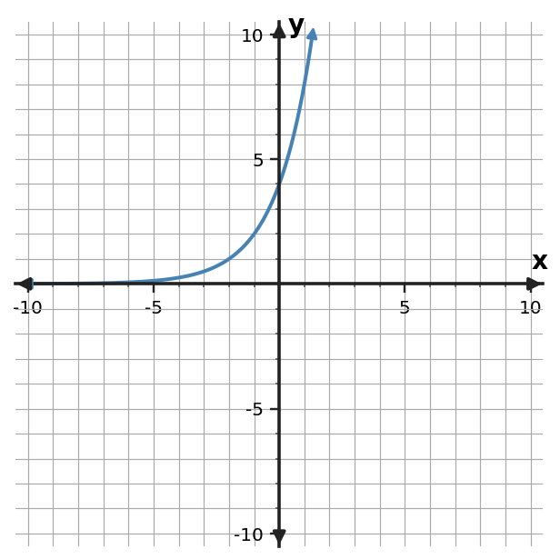

Algebra 1 · Unit 8 Exit Ticket
Section 8.5 — Ticket B
| 1Use the graph to determine the y-intercept and multiplicative growth factor, then write an exponential equation that matches.  | 2Use the table to write an exponential equation.
| ||||||||
| 3A value starts at 120 and decreases by 25% each period. Write an exponential model. | 4Use the graph to determine the y-intercept and multiplicative decay factor, then write an exponential equation that matches. |